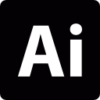
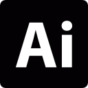

Présentation
Je suis Lilian Le Roux 👨💻
Étudiant en BUT Métiers du Multimédia et de l’Internet, je suis passionné par le webdesign, l’UI/UX et plus globalement par la conception d’expériences numériques à la fois esthétiques, accessibles et fonctionnelles.
Mon parcours m’a permis de toucher à de nombreux domaines du numérique, mais c’est en découvrant la puissance de l’expérience utilisateur que j’ai trouvé ma voie. Ce qui me motive ? Créer des interfaces qui simplifient réellement la vie des utilisateurs, tout en étant inclusives et pensées pour tous les profils — y compris les publics éloignés du digital.
J’ai pu concrétiser cette vision lors de projets comme la refonte du site de TV-Trégor ou la création d’une visite immersive pour ISblue, où j’ai développé une approche complète mêlant design, développement front-end, accessibilité et gestion de projet.
Curieux et tourné vers l’avenir, je m’intéresse particulièrement aux technologies émergentes, notamment les IAs spécialisées qui transforment notre manière d’interagir avec le numérique. J’explore comment ces outils peuvent enrichir l’expérience utilisateur, automatiser intelligemment des parcours, ou encore personnaliser les interfaces à grande échelle.
Sérieux, rigoureux et toujours à l’écoute des besoins terrain, je me spécialise aujourd’hui en UX/UI afin de perfectionner ma méthodologie et d’avoir un véritable impact dans la conception d’interfaces utiles, humaines et responsables.
Mon Parcours
2019 – Découverte du monde du web
Stage d'observation au sein de l'agence Hippocampe à Brest : première immersion dans la création de site web et l’univers digital.
2021 – Baccalauréat STI2D
Spécialité Systèmes d’Information et Numérique (SIN) au lycée La Croix Rouge à Brest. Premiers projets autour du développement et des systèmes numériques.
2022 – Entrée en BUT MMI
Début de ma formation en Métiers du Multimédia et de l’Internet à l’IUT de Lannion. J’y explore le web, le graphisme, l’audiovisuel et l’UX design.
2023 – Stage chez ISblue
Stage à Brest dans la communication numérique. J’ai conçu un blog collaboratif, produit des tutoriels vidéo et accompagné des plateformes comme Moodle et Scoople.
2024 – Communication responsable
Création de signalétique durable pour l’IUT et participation à un appel à projet sur l’éco-anxiété. Réalisation d’identités visuelles et stratégie de communication responsable.
2025 – Stage chez TV-Trégor
Refonte complète du site web avec WordPress, Divi et ACF. Filtres AJAX, tri des contenus, audit UX et gestion d’un projet avec une équipe bénévole.
2025–2026 – Objectif Master
Poursuite d’études en Master UI/UX pour approfondir la conception d’interfaces accessibles, humaines et engageantes.
Compétences
Mon parcours en BUT MMI m’a permis d’explorer une large palette de compétences techniques et créatives. Ce que j’aime, c’est combiner design, développement et stratégie pour créer des expériences à la fois fonctionnelles et percutantes.
Développement Web
Intégration responsive, optimisation front-end, interactions JavaScript, fonctionnalités AJAX… J’utilise le code pour offrir une expérience fluide, rapide et intuitive.
UI/UX & Design graphique
De la maquette à l’interface fonctionnelle, j’adopte une démarche centrée utilisateur pour concevoir des expériences visuelles accessibles, cohérentes et engageantes.
Audiovisuel & Motion Design
Montage, storyboarding, tournage, motion : je m’appuie sur l’image pour valoriser les messages, capter l’attention et renforcer la narration.
Communication & Gestion de projet
Capable de piloter un projet de A à Z, j’alterne entre vision stratégique (objectifs, cibles) et production concrète (content design, réseaux sociaux, livrables).
Outils & logiciels maîtrisés
 



Projets réalisés
Refonte TV-Trégor
Stage UI/UX & développement WordPress
Refonte complète du site de la WebTV TV-Trégor. Conception d'une interface moderne, filtres dynamiques, tri des vidéos, et expérience utilisateur optimisée pour tous les publics.
.jpg)
ISblue – Blog scientifique
Stage UX/UI & Communication
Design d’une charte graphique et création de tutoriels pour le blog collaboratif Blue Learning Post. Projet centré sur l’accessibilité, la pédagogie et la cohérence visuelle avec l’écosystème ISblue.


Projet SOCIETAL
Communication plurimédia & innovation agricole
Conception d'une stratégie complète de communication pour une innovation technologique à destination du monde agricole. Création d’un site, d’une vidéo tutorielle, et de contenus adaptés à une audience professionnelle.

Signalétique écoresponsable
Projet pédagogique BUT MMI
Création d’un système de signalétique autour du tri des déchets à l’IUT de Lannion. Un projet engagé mêlant pédagogie, mascotte, plan de masse et habillages visuels pour inciter au bon geste de tri.


Arvest Trégor
Application mobile - UX & UI Design
Conception d'une interface mobile dédiée à la réservation d’évènements culturels dans le Trégor. Un projet fictif en lien avec le territoire et ses enjeux d’accessibilité culturelle.

.jpg)


Projet 3D – Maison sur pilotis
Modélisation & animation sous Blender
Création d’un environnement lowpoly en 3D : modélisation d’une maison sur pilotis et animation d’une scène marine réaliste, avec requin animé et effets d’eau.


Cookix – Communication Produit
Projet de communication communication
Projet de groupe autour de la création d'une marque fictive de batteur de cuisine. Nous avons élaboré une identité visuelle, une stratégie de communication et des supports promotionnels (affiches, tutoriels vidéo). L’objectif était de mettre en place une campagne cohérente et impactante, en tenant compte des contraintes budgétaires sur plusieurs années.

Tutoriel Vidéo
Montage & Paramétrage Davinci Resolve
En groupe, nous avons produit un tutoriel vidéo pour accompagner l’installation et le paramétrage de l’outil DaVinci Resolve. Ce projet m’a permis d’explorer les étapes de création audiovisuelle de manière professionnelle.
Photos et sons pour l’IUT
Valorisation sonore et visuelle
Ce projet audiovisuel visait à mettre en valeur les espaces verts de l’IUT de Lannion à travers la captation de sons d’ambiance et de photos immersives. Un travail mêlant sensibilité artistique et compétences techniques.
Portfolio
Dev Web | UI/UX
Création de mon site portfolio personnel pour valoriser mes compétences, mes projets, et construire une présence professionnelle en ligne. Design, développement, accessibilité et cohérence visuelle étaient au cœur de ce projet.


Audit Grain de Sail
Stratégie de communication numérique
Réalisation d’un audit approfondi de la stratégie de communication digitale de l’entreprise bretonne Grain de Sail. Le projet a permis d’analyser l’accessibilité, la performance, l’ergonomie, la sémiotique et le trafic du site ainsi que sa présence sur les réseaux sociaux. Un rapport d’audit complet et des recommandations ont été proposés.
Voir l’audit completPassSenior – Application mobile
Projet étudiant x ONFIDO
Dans le cadre d’un projet collaboratif avec l’entreprise Onfido, nous avons conçu une application destinée à faciliter l’accès aux documents administratifs pour les seniors, en exploitant les technologies d’identification numérique sécurisée.


Projet Dicathlon
SAE 301 – UI/UX & Développement
Conception d’une plateforme de réservation de matériel sportif pour une boutique fictive. Le projet mêle design graphique, maquette UI et développement complet sous framework CodeIgniter.


Contact

Téléphone
06 11 49 39 95